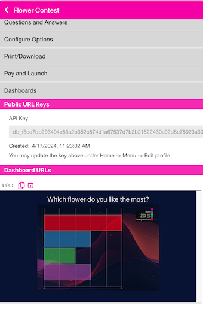

Quick Links
Dashboards
This section allows you to publish the results of your contest to an ‘open’ URL where anyone can view the results. You may put the URL on your website; or put a link to it; or embed the URL in an iFrame. It is a publicly viewable URL, so wherever you put it, anyone with access to it can see your results. The URL includes an API Key. You may reset this API key by going to Edit Profile and choosing the Dashboard Key accordion.

There are 2 ways to access the URL. 1) If you click on the Copy icon , the URL will be put on your clipboard. If you click the ‘open in new tab’ icon , it will open the URL in a new tab - where you can copy it or just view it. We may update this section in the near future to allow you different choices for your Dashboard’s look and feel - like choosing the chart style, colors, etc.
Example iFrame code:
<iframe src="https://dashboards.qr-answers.com/?...."
title="My Dashboard"
style="width: 400px height: 300px"></iframe>
Notice the dashboards.qr-answers.com URL refers to the qr-answers.com domain. QR-Contest and QR-Aswers share some common components. The dashboard rendering is provided by qr-answers.com. So, don’t be alarmed by the difference in the domain.